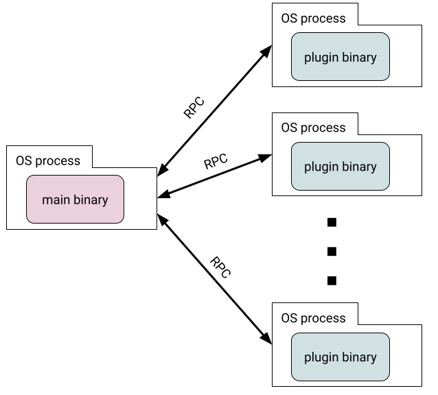

This post is the next installment in my plugin series. The last post discussed the two main approaches to developing plugins in Go: compile-time plugins and run-time plugins. For run-time plugins, the post described how to use -buildmode=plugin and shared libraries to load plugins at runtime, but also hinted at an alternative approach that uses separate processes and RPC.
Now it's time to discuss the RPC approach in more detail, using the hashicorp/go-plugin package. Here's a sketch of how such plugins work:
- Each plugin is a separate Go binary, built using some code shared with the main application.
- The main application loads plugins by running their binaries as sub-processes.
- The main application talks to plugins via RPC to access their functionality.
We'll start by explaining how the go-plugin package works and how it helps us write plugins. Then I'll present a re-implementation of the htmlize program we've been using throughout the plugin series, this time using go-plugin.
The go-plugin package
go-plugin was developed by HashiCorp - a powerhouse of Go-based tooling, and has been used in production by many of their tools (like Terraform and Vault) for years. This is one if its greatest strengths - it's battle-tested.
The basic idea behind go-plugin is a run-time plugin system wherein each plugin is a separate binary and runs in its own OS process.
go-plugin lets us pick which RPC mechanism to use; it supports net/rpc and gRPC out of the box. Therefore, its API is a bit odd at first sight. Specifically, we are expected to define our own RPC methods both for the server (plugin) and the client (main application), and register them with go-plugin by implementing its Plugin interface.
This leaves one thinking - "wait, so what does go-plugin give me, anyway? If I have to implement my own RPC, do I really need this helper package?" - which is a valid question. go-plugin provides several important capabilities, however:
- Handles the actual network connection between a client and multiple servers: supporting Unix domain sockets on Linux for performance, TCP elsewhere.
- When the client launches a plugin server, go-plugin handles discovery - figuring out which port/file the server is listening on, and establishing the connection. This also includes verifying that the launched binary is the right plugin, meant for this program and not something else.
- Supports protocol versioning, which ensures that the main binary doesn't try to talk to plugins that are "too old".
- Supports liveness pings to plugins.
- Can set up mTLS between the client and servers (useful when the plugin runs on a different machine).
- Handles redirection of plugin stdin/stdout streams and logs back to the main process.
- Allows having multiple logical plugins reside in the same binary/process, each with its own RPC interface. All plugins share a single connection to the main process via connection multiplexing that go-plugin implements. This also allows plugins to call back into the main application - more on this later.
htmlize plugins with go-plugin
Let's rebuild our htmlize tool that we've been using for this demonstration since the original plugins post (including the Go version), this time using go-plugin. The full code for this version is on GitHub. We will examine it using the fundamental concepts of plugins.
Discovery and registration: since plugins are just binaries that can be found anywhere, go-plugin doesn't prescribe what approach to take here. It only provides a Discover function which is a basic wrapper around a filesystem glob pattern. In our code, the Manager type takes a path where it will look for plugin binaries, and treats each file in that directory as a potential plugin.
go-plugin does provide tools to ensure that a loaded binary is, in fact, a plugin for the right application. When creating a new go-plugin client, we have to pass in a HandshakeConfig, which has to match between the application and the plugin. This helps ensure that we don't attempt to load a plugin meant for another application, or for a different version of this application.
As described earlier, at this point go-plugin takes over; it launches the plugin in a subprocess, connects to its stdout to discover which address the plugin server is listening on (could be a Unix domain socket or a TCP socket, based on OS), and then sets up the RPC. The main application (client) is now ready to invoke RPCs in the plugin (server), based on the agreed-upon interface.
Application hooks: the central communication point between a plugin and an application with go-plugin is the plugin's exposed interface. In our case, the interface is:
// Htmlizer is the interface plugins have to implement. To avoid calling the
// plugin for roles it doesn't support, it has to tell the plugin managers
// which roles it wants to be invoked on by implementing the Hooks() method.
type Htmlizer interface {
// Hooks returns a list of the hooks this plugin wants to register.
// Hooks can have one of the following forms:
//
// * "contents": the plugin's ProcessContents method will be called on
// the post's complete contents.
//
// * "role:NN": the plugin's ProcessRole method will be called with role=NN
// and the role's value when a :NN: role is encountered in the
// input.
Hooks() []string
// ProcessRole is called on roles the plugin requested in the list returned
// by Hooks(). It takes the role name, role value in the input and the post
// and should return the transformed role value.
ProcessRole(role string, val string, post content.Post) string
// ProcessContents is called on the entire post contents, if requested in
// Hooks(). It takes the contents and the post and should return the
// transformed contents.
ProcessContents(val string, post content.Post) string
}
This interface is presented to the application via a RPC mechanism, so code in the application simply invokes these methods on a value implementing the interface; go-plugin translates this to RPC calls behind the scenes [1].
I recommend you to carefully read the comments on the Htmlizer interface; they describe an interesting nuance w.r.t. application hooks. In our htmlize application, we want plugins to register for specific text "roles". If a plugin didn't register for a role, we don't want to invoke it when the role is encountered - it's wasteful to call N RPCs for N plugins for each role, when in reality at most one plugin likely cares about any given role.
go-plugin does not provide built-in support to handle this conditional registration. A plugin exposes an interface via RPC, and that's it. But it turns out to be fairly easy to implement in a custom way, as our Hooks method demonstrates. Here is how our plugin Manager type handles this; first the Manager type itself:
type Manager struct {
roleHooks map[string]Htmlizer
contentsHooks []Htmlizer
pluginClients []*goplugin.Client
}
And the relevant part from its LoadPlugins method:
// Query the plugin for its capabilities -- the hooks it supports.
// Based on this information, register the plugin with the appropriate
// role or contents hooks.
capabilities := impl.Hooks()
for _, cap := range capabilities {
if cap == "contents" {
m.contentsHooks = append(m.contentsHooks, impl)
} else {
parts := strings.Split(cap, ":")
if len(parts) == 2 && parts[0] == "role" {
m.roleHooks[parts[1]] = impl
}
}
}
It queries each plugins for its supported hooks, and then registers the right hooks. As a result, when we encounter a role like :tt:, it will only invoke the plugin that asked to handle this role.
In this code impl refers to a value of the type PluginClientRPC, which implements the Htmlize interface by issuing RPC calls to the plugin:
// PluginClientRPC is used by clients (main application) to translate the
// Htmlize interface of plugins to RPC calls.
type PluginClientRPC struct {
client *rpc.Client
}
func (c *PluginClientRPC) Hooks() []string {
var reply HooksReply
if err := c.client.Call("Plugin.Hooks", HooksArgs{}, &reply); err != nil {
log.Fatal(err)
}
return reply.Hooks
}
func (c *PluginClientRPC) ProcessContents(val string, post content.Post) string {
var reply ContentsReply
if err := c.client.Call(
"Plugin.ProcessContents",
ContentsArgs{Value: val, Post: post},
&reply); err != nil {
log.Fatal(err)
}
return reply.Value
}
func (c *PluginClientRPC) ProcessRole(role string, val string, post content.Post) string {
var reply RoleReply
if err := c.client.Call(
"Plugin.ProcessRole",
RoleArgs{Role: role, Value: val, Post: post},
&reply); err != nil {
log.Fatal(err)
}
return reply.Value
}
Per convention, each RPC call has its own type for arguments and another for the response (e.g. RoleArgs and RoleReply). These are basic data containers I'm leaving out of this post but you can see in the code. A similar RPC wrapper is implemented on the server (plugin) side, doing the translation the other way.
Exposing application capabilities back to plugins: this is actually quite tricky to accomplish in RPC-based systems, at least in the general case. Since in this model plugins run in a separate process, we can't just pass a reference to a big data structure into the plugin as we did before.
For small and simple data structures, serializing them through the RPC is not an issue. This is what our example does for the content.Post type - as you can see from the Htmlizer interface code snippet above. But what about larger types? What if we want to expose the entire DB to the plugin? Or have the plugin invoke functionality in the main application.
This is one of the capabilities go-plugin provides, via its bidirectional communication feature. go-plugin can multiplex several RPC channels onto the same connection between the plugin and the application (using the yamux package), and through this the client can open its own RPC server available to the plugin to invoke.
I left this out of our example because I didn't want to needlessly complicate it (we don't really need this functionality for htmlize), but I created a separate sample that shows how to do this with net/rpc - it's on GitHub if you're interested [2].
A sample plugin for htmlize
Here's the entire code for a sample plugin - one that implements rendering the :tt: role into the <tt> HTML element:
package main
import (
"fmt"
"example.com/content"
"example.com/plugin"
goplugin "github.com/hashicorp/go-plugin"
)
type TtHtmlizer struct{}
func (TtHtmlizer) Hooks() []string {
return []string{"role:tt"}
}
func (TtHtmlizer) ProcessContents(val string, post content.Post) string {
return val
}
func (TtHtmlizer) ProcessRole(role string, val string, post content.Post) string {
return fmt.Sprintf("<tt>%s</tt>", val)
}
func main() {
goplugin.Serve(&goplugin.ServeConfig{
HandshakeConfig: plugin.Handshake,
Plugins: map[string]goplugin.Plugin{
"htmlize": &plugin.HtmlizePlugin{
Impl: TtHtmlizer{},
},
},
})
}
Using go-plugin involves a bit of work for setting up the RPC scaffolding, but once that's all done, writing new plugins is quick and easy: just implement an interface and invoke a plugin server registration function in main.
Source code
The full source code for this sample is here: go-plugin-htmlize-rpc.
Separate sample that shows how to call back from plugins into the host with go-plugin and net/rpc: go-plugin-bidir-netrpc.
| [1] | To be precise, it's RPC scaffolding implemented by us + go-plugin that do this in tandem. As described earlier, in order to support multiple RPC flavors, go-plugin leaves the RPC layer scaffolding for users to define. |
| [2] | The go-plugin repository has an example of doing this for gRPC but not for net/rpc, as far as I could tell. |